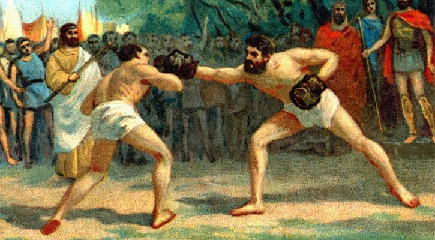
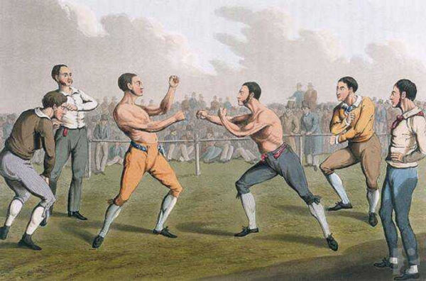

A Suméria, um dos cinco berços da civilização, também é berço de quase tudo que hoje é dito ser "ocidental", incluindo o boxe cujas evidências mais antigas datam 3000 a.C.[4] Mais tarde foi levado para o Antigo Egito e milênios depois para a Grécia, onde ficou conhecido como Pigmaquia.
Nos séculos XVIII e XIX, quando houve o renascimento na Inglaterra, o era praticado na modalidade boxe com as mãos nuas. Essas lutas com as mãos descobertas eram frequentemente brutais, de modo que o boxe acabou sofrendo intensas mudanças em 1867, com a formulação das Regras do Marquês de Queensberry, que previam rounds de três minutos, separados por um intervalo de um minuto, além do uso obrigatório das luvas de boxe. Essas regras entraram em vigor em 1872.
O boxe foi primeiramente considerado um desporto olímpico em 688 a.C., na 23.ª olimpíada da antiguidade; seu vencedor foi Onomasto de Esmirna, que foi quem definiu as regras do esporte.[8] Posteriormente, quando houve o ressurgimento dos Jogos Olímpicos da Era Moderna, nas Olimpíadas de 1896, em Atenas, o boxe não foi incluído como uma das modalidades da competição.[9] O boxe então somente retornou nas Olimpíadas de 1904, a terceira da Era Moderna, em St. Louis, e desde então foi praticado em todas as suas edições posteriores, com exceção das Olimpíadas de 1912, em Estocolmo.